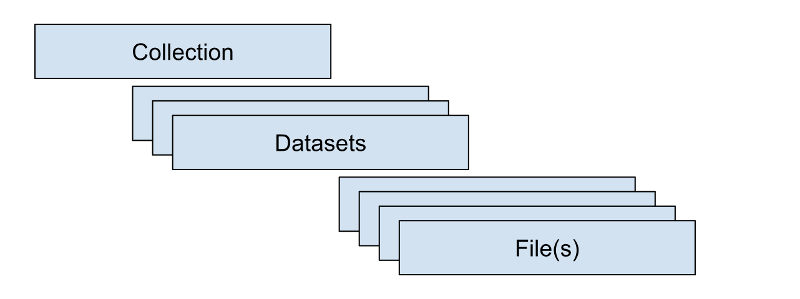

Admin Users Guide for NIST LabCAS
This guide provides instructions for users with administrator privileges on how to administer the NIST LabCAS system.It covers in-system administration and describes how admin users coordinate with back-end operations (e.g., ingest, bulk updates) handled by the LabCAS operations team.
Table of Contents
Overview
0.1 What this guide is
0.2 What this guide covers
0.3 Roles and responsibilities
0.4 PrerequisitesCollections, datasets and files
1.1 What is a collection
1.2 What is a dataset
1.3 Prepare collection-level metadata
1.4 Publish a collection
1.5 Create a dataset
1.6 Add files and file-level metadata
1.7 Publishing File Level Metadata and FilesEditing and bulk updates
2.1 Edit existing metadata
2.2 Bulk updates (CSV/scripts)
2.3 Validation checksUI configuration
3.1 Virtual hierarchy (facet)
3.2 Collection display options (top level/pinned files, highlights)
3.3 List behaviors (show files at top, highlight styles)Access management
4.1 Approving users (access management)
4.2 Assign groups and permissions
4.3 Manage users and groupsQuality checks and troubleshooting — David/Heather
7.1 Pre-publish checklist
7.2 Post-publish validation (spot checks, counts)
7.3 Common issues and fixes
0. Overview
LabCAS is a platform for building and operating a data commons. It provides:
Secure, reliable capture, processing, management, search, and analysis of scientific data
Plug-in analytical methods and tools
Repeatable data-processing pipelines
Integration with visualization and external analytics
Data delivery to and from participating sites
Data and metadata in LabCAS
LabCAS uses data models and metadata to capture information consistently across the NIST Data Commons. Metadata can be added over time and linked across tools, yielding a consistent data architecture.
Data are organized hierarchically: collections at the top level, datasets within collections, and files within datasets. Collections group data logically (e.g., a consortium). Datasets further organize content (e.g., participant submissions in an inter-laboratory study or a standardized, analysis-ready release that harmonizes data from all participants). Files are the most granular components and can exist at either the collection or dataset level.

Collections for NIST are organized primarily by NIST BBD Core Capabilities. Collections that are currently being piloted include:
NIST Flow Cytometry Standards Consortium
NIST Genome Editing Consortium
Cell Line Provenance
Microbial Metrology
0.1 What this guide is
This guide is for LabCAS administrators at NIST BBD who create and manage collections, datasets, files, and access. It focuses on admin workflows that keep the data commons organized, searchable, and secure.
0.2 What this guide covers
Creating collections and datasets
Preparing and publishing collection/dataset/file metadata
Adding, updating, and replacing files
Configuring the UI (virtual hierarchy/facets, highlighted and pinned files)
Editing metadata, including via bulk updates
Approving users and managing groups/permissions
Basic checks and troubleshooting after publish
0.3 Roles and responsibilities.
Admin/Curator:
Creates collections and datasets
Prepares and publishes metadata and files
Configures UI (facets, display options)
Runs basic validation checks
Manages user access within the project scope
0.4 Prerequisites
Accounts and permissions
Active LabCAS account with super-user privileges for access to all collections
Active LDAP account to approve and manage users and groups
Metadata and files
Latest metadata templates for collection/dataset/file levels
Access to shared storage or upload location used by your project
LabCAS UI Config Files and Scripts
Facet configs for the virtual hierarchy for each collection
Metadata schemas for each dataset
Bulk update scripts or CSV import tools if your team uses them
1. Collections, Datasets and Files
1.1 What is a collection
A collection captures the highest-level information about a body of data. It can describe multiple datasets and should be planned thoughtfully so data are grouped logically in LabCAS.
Create a new collection when:
The data represent a distinct program, consortium, project, or study family.
Governance, access groups, or long-term ownership differ from existing collections.
The metadata you need at the top level are materially different from existing collections.
Before creating a new collection, ask:
Is this already covered by an existing collection?
Could this be captured as a dataset under an existing collection?
1.2 What is a dataset
A dataset provides the secondary grouping within a collection and applies to all files it contains.
Data can be organized into datasets for various purposes, including:
Participant submissions within a study
A standardized, analysis-ready release that harmonizes contributions
A specific versioned release or data slice tied to a publication or milestone
1.3 Prepare collection-level metadata
Step 1: Open the Core Collection Metadata Sheet.
Step 2: Create a Google Sheet with a single row for the new collection.
Step 3: Enter collection details, completing all required fields and using permissible values where provided.
Assign permissions in OwnerPrincipal using LDAP group DNs. For multiple groups, separate with a vertical bar “|”, for example: groupA|groupB|groupC.
Step 4: Share the sheet with the JPL IC team to generate the Collection-level file .cfg file.
LDAP groups and OwnerPrincipal metadata
Access to LabCAS Collections, Datasets, and Files is controlled by the OwnerPrincipal metadata field. OwnerPrincipal stores one or more LDAP groups (for example, cn=A, cn=B), and access is determined by group membership.
Key points:
Collection-level access is required
A user must belong to at least one LDAP group listed in the collection’s OwnerPrincipal to see that collection at all.
If the user cannot see the collection, they also cannot see any datasets or files inside it, regardless of their group membership at lower levels.
Dataset-level access further restricts visibility
Within a collection, a dataset may have its own OwnerPrincipal value.
To see a dataset, a user must:
Have access to the parent collection, and
Belong to at least one LDAP group listed in the dataset’s OwnerPrincipal (if defined).
File-level access (optional)
In most cases, files inherit visibility from their parent dataset.
If file-level OwnerPrincipal values are used, a user must:
Have access to the parent collection, and
Have access to the parent dataset, and
Belong to at least one LDAP group listed in the file’s OwnerPrincipal.
Super User group
Members of a designated Super User LDAP group have administrative access and can see all Collections, Datasets, and Files, regardless of OwnerPrincipal settings.
.
1.4 Publish a collection
Verify the collection appears in the UI.
Confirm title, description, and key metadata fields.
Confirm access (OwnerPrincipal) is correct.
Confirm initial facets and display behavior as expected.
1.5 Create a dataset
Confirm the dataset belongs under the target collection.
Step 1: Open the Core Dataset Metadata Sheet.
Step 2: In the same Google Sheet used for the collection metadata, create a new tab for the dataset.
Step 3: On a single row within that tab enter dataset metadata, provide all required fields and permissible values where provided.
Step 4: If needed, assign permissions in OwnerPrincipal using LDAP group DNs. Otherwise, permissions are inherited from the collection if omitted.
Public collections: set OwnerPrincipal to DN=All.
Multiple groups: separate with a vertical bar “|”, e.g., groupA|groupB|groupC.
Step 5: Share with JPL IC to generate the DatasetLevel .cfg, then publish.
1.6 Add files and file-level metadata
Step 1: Stage files on Globus.
Step 2: Provide file-level metadata (CSV or template) as required for your collection. This must include the Core File-level metadata and any other Extensions in the NIST Data Model that apply to your data files.
To include collection-level files, highlight files, or have a file appear at the top of the file list, complete the appropriate metadata tags in the Core File:
Highlight = True
PriorityRanking = Top
CollectionLevelFileHierarchy =
[CollectionName]+/+SubFolderName
Step 3: Notify JPL IC when files and metadata are ready for ingest
Step 4: Publish files.
Step 5: Verify counts and spot-check metadata and files.
1.7 Publishing File Level Metadata and Files to LabCAS
Important: Uploading/ingesting new files and file‑level metadata is not performed through this UI. Those operations are handled by the LabCAS back‑end ingest process.
Prepare your metadata (CSV or JSON) and file paths.
Coordinate with the back‑end operator to ingest.
After ingest, use the UI checks above to verify publishing (counts, spot checks, hierarchies, and viewers).
2.0 Editing and bulk updates
2.1 Edit existing metadata
Core collection/dataset/file metadata is read‑only in the general UI. There is no generic metadata editor in the collection/dataset/file detail pages.
The “ML Output Viewer” (menu item) provides an editor for specific ML job outputs only:
Open ML Job Status, then an output in the viewer.
Click “Edit Mode”, change cell values, optionally select a validation schema.
Click “Save”, then “Publish” to submit changes to the configured JSON output endpoint.
Note: This does not edit the core Solr file records; it edits the ML output document.
For corrections to core file/dataset/collection metadata, reach out to admin team for bulk updates via the back‑end ingest process.
2.2 Bulk updates (CSV/scripts)
Bulk updates are executed by back‑end tools, but the UI helps you prepare and verify data.
Export what’s there:
Single file: open the file page and click “Download Metadata”.
Many files: build a virtual hierarchy node (section 3.1) and click “Download Metadata” at that node to export a CSV of all matching files.
Edit offline:
In a spreadsheet, retaining the id column for each file (that is the unique key).
Submit updates for ingest:
Provide the CSV to your LabCAS admin for an update run. The UI does not upload metadata.
Re‑verify in the UI after ingest:
filter/search, reopen file pages, and/or re‑export a CSV to confirm changes.
2.3 Validation checks
In‑UI validation support exists in the ML Output Viewer and general sanity checks elsewhere.
ML Output Viewer validation:
From the ML Output Menu Item click a job.
Toggle “Edit Mode” and choose a validation schema (e.g., ML Output, Flow Cytometry, Genomics).
The table highlights invalid cells (red with
!). Hover or click to see rule details (required fields, allowed values, patterns, max length, numeric checks).Fix values, re‑validate, then “Save” and “Publish” if needed.
3.0 UI configuration
The UI reads assets/conf/environment.cfg on login (check github readme). See docs/environment_config_reference.md for a full key reference. The most relevant areas are summarized below.
3.1 Virtual hierarchy (facet)
How to use (see the User Guide for more details):
On a collection or dataset page, use “Build your own hierarchy”. Choose one or more fields (tags) to form a tree (e.g., Cohort, then Gender, then FileType).
Use “Expand All” to open/close the entire tree.
Click a node to view its files.
Use node‑level “Download” or “Download Metadata”.
Your chosen tags persist per collection in your browser.
What determines available fields:
The available hierarchy facets are gathered from file facet counts.
Changing that list requires a code update in environment.cfg (refer to github assets/conf/environment.cfg) and deployment.
3.2 Collection display options (top level/pinned files, highlights)
Configure in assets/conf/environment.cfg:
collection_header_order: Controls which collection fields show and their order on the collection page.
collection_header_hide: Hides specific fields on the collection page.
collapsible_headers: Long fields render collapsed with a “More/Less” toggle.
collection_id_append: Appends the ID next to a field’s value.
collection_header_extend_
/ dataset_header_extend_ : Adds extra fields for a specific collection. metadata_table_collection_mapping: Enables the “Schema Metadata” section tabs for specific collections.
Favorites (pinned):
Star buttons are shown when favorites_enabled is true (default). Clicking the star toggles a per‑user favorite; favored items render with a green star.
Top‑level “Collection Level Files”:
Shown automatically when a collection has files that belong at the collection level; hidden when none exist.
Image/Viewer‑related options:
image_viewer_enabled_collections: Enables image viewer actions for listed collections (OHIF/DSA/standard image viewers).
dataset_image_hide: Suppress images for specific dataset patterns if needed.
3.3 List behaviors (show files at top, highlight styles)
Ordering and pagination:
Files are listed alphabetically by FileName; datasets by DatasetName. Lists paginate (10 per page) with controls at top/bottom.
“All” checkboxes select entire pages.
Virtual hierarchy table:
Tree nodes have expand/collapse, “Download”, “Download Metadata”, and image‑viewer actions where applicable.
Highlights/visual cues:
Favorites (star) turn green when selected.
Long text fields show a “More/Less” toggle per collapsible_headers.
Image files display thumbnails automatically when ThumbnailRelativePath exists; DICOM and whole‑slide formats show viewer options.
4.0 Approving Users (access management)
The LabCAS Password Manager (BioKey), built on Wagtail, allows NIST administrators to manage user accounts and control access to LabCAS collections, datasets, and files.
End users can use BioKey to:
Request access to NIST LabCAS collections (see Users Guide)
Change their password
Reset a forgotten password
4.1 Accessing the NIST Password Manager
URL: https://edrn-labcas.jpl.nasa.gov/biokey/nist/
To manage NIST LabCAS users, you must have an LDAP login assigned to the EDRN LDAP group. If you do not have an account, you can request one from JPL IC.
To open the management interface:
Go to the above URL
Click on the “Oversight” link in the lower left corner
Login with your LDAP credentials
The “Manage Directory” block will appear.
4.2 Review Pending Approval
When a user requests an account, you will receive an email notification.
To review and act on the request:
Click on the link in the email notification, or
Click on the “Manage Directory” in Biokey.
Then, inspect the user’s registration details and choose one of the following actions:
Approve – Notifies the user by email and assigns them to the groups they requested.
Reject – Deletes the request and notifies the user by email.
Delete – Deletes the request without notifying the user.
4.3 Manage Users and Groups
From the Manage Directory screen:
Click “Users” to view or delete individual user accounts.
Click “Groups” to:
View all users in a group
Add users to a group
Remove users from a group